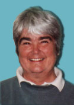
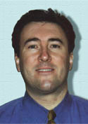
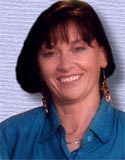
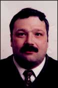

|
 |
|
Felicity O'Brien
M.Sc., Grad. Dip. in Ed.
Paleontologist
3rd. Degree Black Belt
27 years experience
Level 2 Certified Coach
Level 3 Candidate
|
Positions Held Nationally:
National "C" Referee
Past National
Councilor
Positions Held Provincially:
Past President of Judo NF
Member: Provincial Executive
Member: Black Belt Grading Board
Member: Referee Committee
Canada Winter Games Female Coach
Specialties:
Nage No Kata
Katane No Kata
Juno Kata
 |
|
Michael Kay
M. Sc. in Physiotherapy
Physiotherapist
1st. Degree Black Belt
23 years experience
Level 3 Certified Coach with NCCP
NCCP Course Conductor Level 1
|
Positions Held Provincially:
Coach/Manager for the Canada Winter Games Team
Specialties:
Injury Prevention
Flexibility Training
Athletic Injuries - Treatment (Taping)
| 
|
|
Virginia Caul
1st. Degree Black Belt
6 years experience
Level 2 Certified Coach with NCCP
Level 3 Candidate
Secretary/Treasurer of Club
|
Positions Held Provincially:
|

|
|
Patrick B. Dunne
CD, DTM
Shodan (1st Degree Black Belt)
Level Two Certified Coach - NCCP
Level Three Candidate - NCCP
Club Chair - Fund Raising Committee
|
Positions Held Provincially:
Secretary - Newfoundland and Labrador Judo Association
Secretary - Sport Newfoundland and Labrador
Provincial "B" Referee - Province of Newfoundland and Labrador
Specialties:
Nage No Kata
Katame No Kata
|